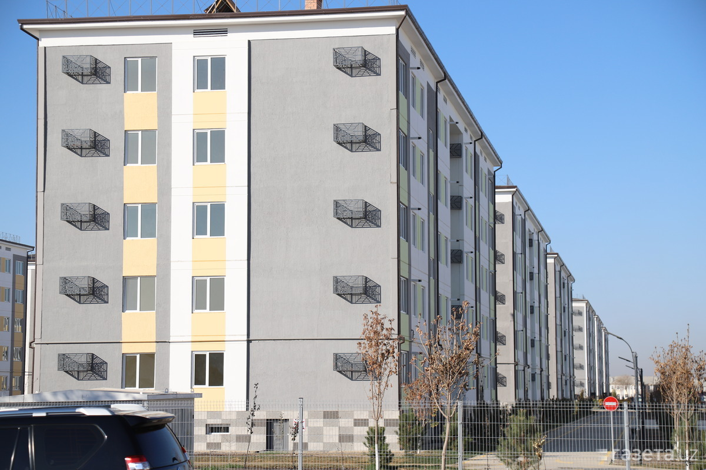

"Kommunal boshqaruv inqirozi"
Yangi qurilgan ko‘p qavatli uylar soni ko‘paygan, biroq ularni boshqarish va servis xizmati oqsamoqda.Faqat uy qurish kifoya emasligi ma’lum bo‘lib qoldi. 2026-yilda uy-joy mulkdorlari shirkatlari va boshqaruv kompaniyalarida professional kadrlar yetishmasligi asosiy muammoga aylandi.
2026-yilga kelib O‘zbekistondagi uy-joy qurilishi sur’atlari shaharsozlikning yangi bosqichiga chiqqan bo‘lsa-da, kommunal boshqaruv tizimi bu tezlikka dosh berolmay, o‘ziga xos "tizimli inqiroz"ni boshdan kechirmoqda. Muammoning tub mohiyati shundaki, so‘nggi yillarda minglab yangi ko‘p qavatli uylar foydalanishga topshirildi, biroq ularni professional darajada ekspluatatsiya qiladigan, muhandislik tarmoqlarini tushunadigan va aholi bilan zamonaviy muloqot qila oladigan kadrlar yetishmasligi ochiq-oydin ko‘rinib qoldi. 2026-yil boshidagi tahlillar shuni ko‘rsatmoqdaki, mavjud 900 dan ortiq boshqaruv servis kompaniyalari (BSK) va saqlanib qolgan shirkatlarning aksariyati hali ham eski uslubda, faqat favqulodda avariyalarni bartaraf etish bilan cheklanib qolmoqda, uzoq muddatli servis va preventiv xizmat ko‘rsatish madaniyati esa shakllanmagan.


Vaziyatni murakkablashtirayotgan asosiy omillardan biri — boshqaruv kompaniyalarining moliyaviy shaffof emasligidir. Ekspertlar hisob-kitoblariga ko‘ra, yirik shaharlarda boshqaruv kompaniyalarining yashirin daromadlari rasmiy tushumlardan ikki baravar ko‘proqni tashkil etmoqda, bu esa aholining majburiy badallarni to‘lashga bo‘lgan ishonchini so‘ndirmoqda. Shu sababli, 2026-yildan boshlab hukumat "Mening uyim" raqamli platformasini Toshkentda to‘liq ishga tushirib, barcha to‘lovlarni faqat elektron shaklda qabul qilish va har bir uy uchun alohida bank hisob raqami ochish tizimiga o‘tmoqda. Bu orqali uy egalari o‘z pullari qayerga sarflanayotganini nazorat qila oladi. Shuningdek, sohada kadrlar yetishmovchiligini hal qilish uchun tuman hokimiyatlarida uy-joy kommunal xo‘jaligi bo‘yicha "bosh muhandis" va alohida o‘rinbosar lavozimlari joriy etilmoqda, chunki faqatgina uy qurish bilan cheklanib, uning infratuzilmasini (liftlar, issiqlik tizimi, nasoslar) tashlab qo‘yish ijtimoiy norozilikka sabab bo‘layotgani tan olindi.